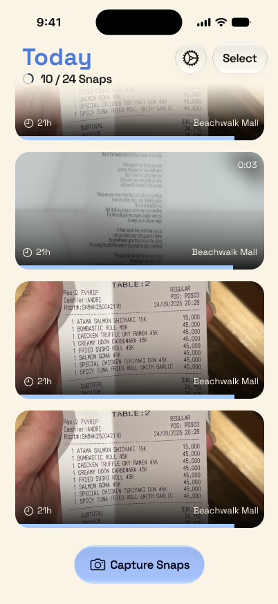
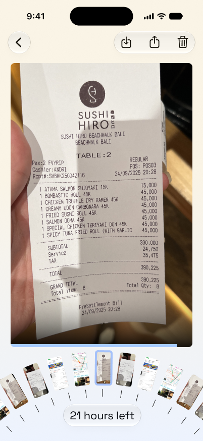
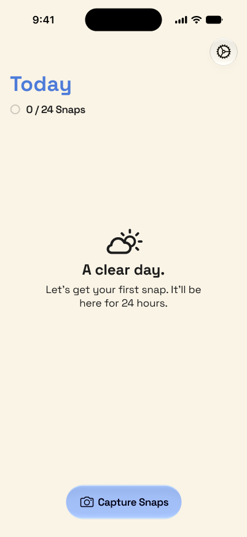
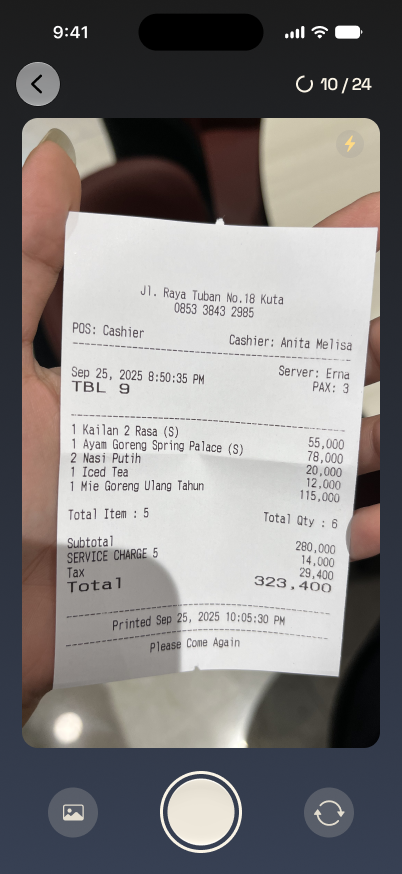

Product case study · iOS · Live on the App Store
How a four-person team turned an Apple Developer Academy capstone into a shipped, privacy-first iPhone app, and the product calls that kept it simple.


People use the iPhone camera as a quick notepad: a receipt to split a bill, a whiteboard, an info board at a station. The stock Camera app saves every one of them to the main gallery, next to the photos that matter. Weeks later they are still there, burying memories and taking up storage.
Nobody wants to clean that up. The photo did its job in five seconds; the clutter lasts for years.
"These photos are notes, not memories. Nobody wants to file a note."
The mental model that came out of research: users treat these shots as disposable references. Any feature that asks them to organise, tag or set things up fights that model.
I led validation of the target user before we committed to a roadmap. The evidence came from 7 user interviews, team dogfooding, existing App Store reviews of A Day, and a competitive scan of other temporary-camera apps.
I kept the parking case out of the positioning even though it was the team's favourite example, because the interviews did not back it.
We mapped every planned feature against one persona from scoping. His pain points were blunt: too lazy to set up, too lazy to declutter, and he texts himself notes instead of using a notes app.
That exercise flagged two planned features, custom camera settings and list/grid organising, as quietly contradicting the product. Both assume manual effort from a user who will never give it.
One persona is not proof, so this became a design guardrail rather than a cut: frame those features as smart defaults, not manual controls.
The market already had temporary-camera apps (StashCam, Sortino, CheckCam). Competing on "auto-delete" alone would make A Day one more of the same.
I set the positioning as speed of access plus zero configuration: open from the lock screen widget, Control Center or the Action Button, shoot, forget. No setup screen, no folders.
What we deliberately did not lead with: the "digital waste" story. It won the room at our Academy capstone exhibition, but no interviewee used the app because of digital minimalism. It stays as secondary messaging, a side effect of "capture and forget", not the hook.
An Academy mentor still had A Day installed and was using it almost six months after the program ended. On iPhone 16 the Action Button and the lock-screen camera widget both open the same stock Camera by default, so one slot is wasted. We suggested he put A Day in the second slot: one camera to keep, one camera to forget.
Not formal data, but it showed the positioning working in daily life, and it is a big part of why the team restarted the project in 2026.
"A camera for things you only need to see once, then forget."
The team agreed that I would make product calls, with each discipline deciding inside its own area and me as tie-breaker. These are the decisions that shaped the app.
A privacy-first camera that tracks you is a contradiction, so we shipped with zero analytics, not even opt-in. Success is measured by App Store rating (target ≥ 4.5), growth in organic reviews, and qualitative research every six months, which I lead.
Cost: we fly without usage data. Mitigation: research recruits through the in-app feedback button and replies to reviews.
In-app purchase is experimental, not revenue-driven. I locked the rule that IAP may only unlock power-user extras, never something that was once free. Custom deletion time and extra media slots were moved out of Phase 1 so they are not shipped free and paywalled later.
Exit criterion before any IAP work: qualitative evidence that more than one person uses the app as a habit.
"What happens if the user denies camera, photos or location?" was originally a Phase 3 item. I moved it into Phase 1 as a blocking foundation, because a camera app that breaks on a denied permission fails at the first second.
Cost: fewer visible features in the first release.
When the schedule stretched, I called a release with the stable scope and skipped the custom app icon as minor. Better a shipped v1.1 than a perfect one that keeps slipping.
Cost: Phase 1 still landed about seven weeks after the original target.
The ticket looked trivial: call Apple's review prompt "at the right time". Defining the right time for A Day turned out to be the interesting part.
Industry advice says to prompt after a success moment, like finishing a streak. But in A Day, a happy session lasts five to ten seconds. Prompting right after a capture interrupts someone mid-errand. A long session usually means the user is exploring, not hurrying, and that is the calm moment to ask.
So the trigger uses an exploration signal: two minutes or more in the app, a long-press save, or a swipe-up to view photo details.
Users enter from the app icon, widgets or quick actions, often straight into a photo. I split the logic into two layers:
7+ days since install, one full deletion cycle seen, 90+ days since last promptDecision: the full spec needed five state variables, navigation tracking and a session timer, far beyond the "small effort" label the ticket started with. I moved it to Phase 2 with the spec kept ready, and shipped a one-tap "Rate & Review" link in Settings as an interim fix. The lesson I now apply: estimate the whole implementation, not the most visible API.
Each feature in Phase 1 was checked against the same question: does it save the user effort, or ask for it?


Four people giving 8 to 10 hours a week, one of them studying abroad mid-project. I ran the weekly sync, kept the roadmap and minutes in Linear, tracked progress against time elapsed, and set norms that made the pace sustainable: give notice instead of asking permission, no "making up" missed hours, a health check after two inactive weeks.
When progress-versus-time slipped (50% of issues done at 74% of time elapsed), I changed progress tracking from sub-issues to parent issues so the number reflected real deliverables, separated release ops from feature work, and re-scoped.
The same habits I used for nine years in enterprise delivery at Telkomsel, now applied to a consumer product: frame the real problem before building, pick one focus and defend it with evidence, write down every trade-off, and ship.
Full listing: A Day on the App Store.